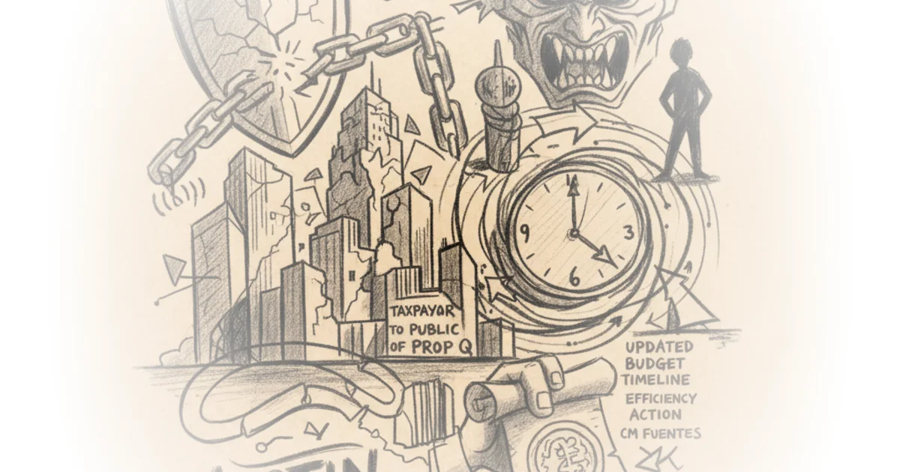
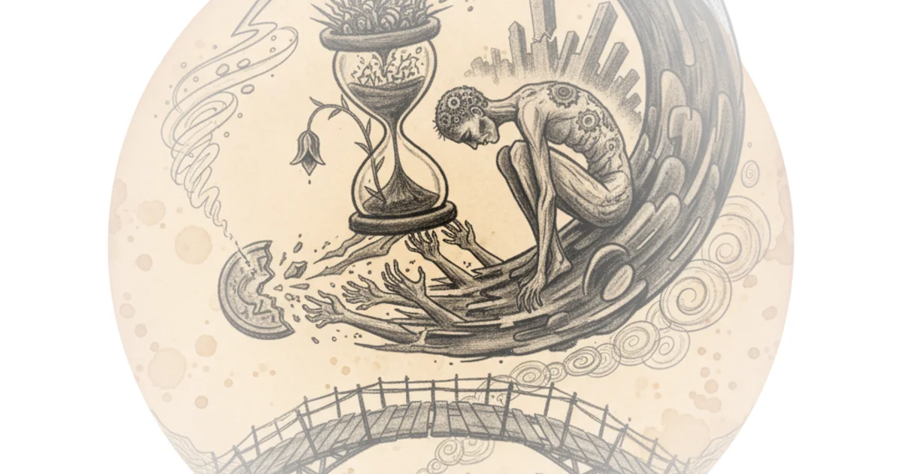
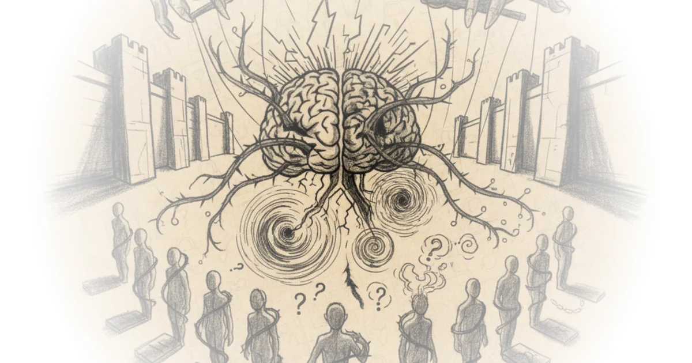

Journalists’ Day Shouldn't be a Celebration Zichen Wang · Pekingnology ·Nov 9, 2025 · 10 min read · China
Save Austin NOW: AAS Recap, WSJ Editorial on Prop Q Defeat Save Austin Now · Save Austin Now ·Nov 7, 2025 · 19 min read · Housing & Cities 
How to Get Involved in City Planning — City Beautiful Basics Dave Amos · City Beautiful ·Nov 5, 2025 · 13 min read · Housing & Cities
Russia's new "Skyfall' Missile - Evaluation & the Danger of "Superweapon Syndrome" Perun · Perun ·Nov 2, 2025 · 63 min read · Defense
Inventing Antifa Sarah Kendzior · Sarah Kendzior's Newsletter ·Oct 18, 2025 · 13 min read · Political Strategy
We've Forgotten how to Travel Tom van der Linden · Like Stories of Old ·Oct 18, 2025 · 27 min read · Culture
Requests for journalists covering AI and the environment Andy Masley · ·Oct 18, 2025 · 14 min read · AI & Tech
We Were Wrong About the Quantum Eraser! ft. @LookingGlassUniverse Matt O'Dowd · PBS Space Time ·Oct 16, 2025 · 20 min read · Science
PanoptiCon Artists: Your Questions Answered Sarah Kendzior · Sarah Kendzior's Newsletter ·Oct 10, 2025 · 24 min read · Political Strategy
I Tracked Down The Company Ruining Restaurants More Perfect Union · More Perfect Union ·Oct 7, 2025 · 10 min read · Economics
Is Social Media Destroying Democracy—Or Giving It To Us Good And Hard? Dan Williams · Conspicuous Cognition ·Oct 7, 2025 · 17 min read · Philosophy
Taylor Lorenz: Memes, Masks and Dark Money Doom Scroll · Doom Scroll ·Oct 6, 2025 · 59 min read · Political Strategy
He Was Untraceable - How They Really Caught Tyler Robinson The Hated One · The Hated One ·Oct 6, 2025 · 14 min read · Political Strategy
I Spent 60 Days Talking To Mark Zuckerberg's ChatBots More Perfect Union · More Perfect Union ·Sep 25, 2025 · 23 min read · AI & Tech
We're in a Writing Renaissance: Sam Kahn on Substack Fiction and Democratic Publishing PILCROW · ·Sep 23, 2025 · 38 min read · Political Strategy
Tunnel Vision Sarah Kendzior · Sarah Kendzior's Newsletter ·Sep 22, 2025 · 10 min read · Political Strategy
The Charlie Kirk Shock Doctrine - The Doxxing Wars Are Here The Hated One · The Hated One ·Sep 19, 2025 · 12 min read · Political Strategy
Economist fact-checks Gary’s Economics Joeri Schasfoort · Money & Macro ·Sep 15, 2025 · 19 min read · Economics 
Censorship is Primarily a Problem of Institutional Selection Musa al-Gharbi · Symbolic Capital(ism) ·Sep 8, 2025 · 33 min read · Philosophy 
The End Times of Academia Sarah Kendzior · Sarah Kendzior's Newsletter ·Sep 5, 2025 · 18 min read · Political Strategy
Mafia State Survival: Your Questions Answered Sarah Kendzior · Sarah Kendzior's Newsletter ·Aug 29, 2025 · 25 min read · Political Strategy
I Miss How Google Used To Work More Perfect Union · More Perfect Union ·Aug 20, 2025 · 19 min read · AI & Tech
My Friend Leatherface Sarah Kendzior · Sarah Kendzior's Newsletter ·Aug 20, 2025 · 12 min read · Political Strategy
On Palestine Sarah Kendzior · Sarah Kendzior's Newsletter ·Aug 14, 2025 · 15 min read · Political Strategy
Scientific research has big problems, and it's getting worse Sabine Hossenfelder · Sabine Hossenfelder ·Aug 14, 2025 · 14 min read · Science
Import AI 424: Facebook improves ads with RL; LLM and human brain similarities; and mental health… Jack Clark · Import AI ·Aug 11, 2025 · 17 min read · AI & Tech
Economist reacts to Tiktoks about the economy Joeri Schasfoort · Money & Macro ·Aug 8, 2025 · 19 min read · Economics
The Case Against Social Media is Weaker Than You Think Dan Williams · Conspicuous Cognition ·Jul 26, 2025 · 15 min read · Philosophy
An Interview with Gheorghe Zamfir, Master of the Pan Flute and Film Soundtrack Hero Scott Tobias & Keith Phipps · The Reveal ·Jun 18, 2025 · 15 min read · Culture
#59: ‘Sans Soleil’: The Reveal discusses all 100 of Sight & Sound’s Greatest Films of All Time Scott Tobias & Keith Phipps · The Reveal ·Jun 17, 2025 · 17 min read · Culture